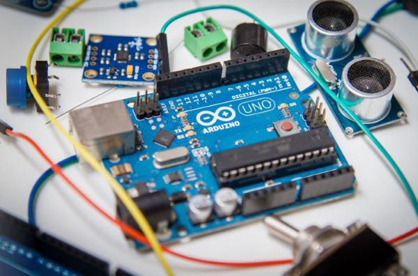
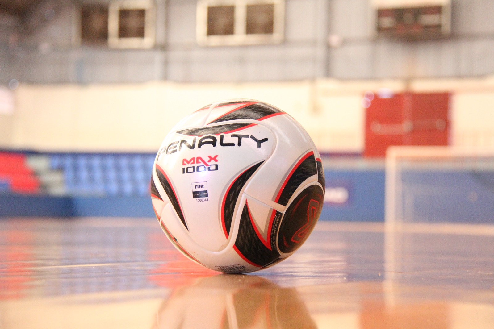
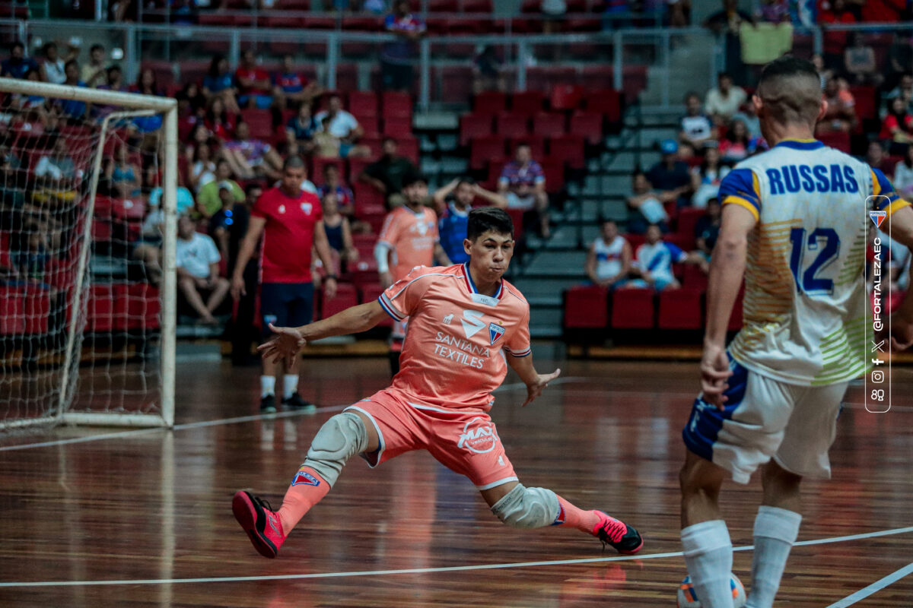
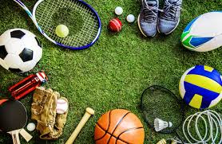
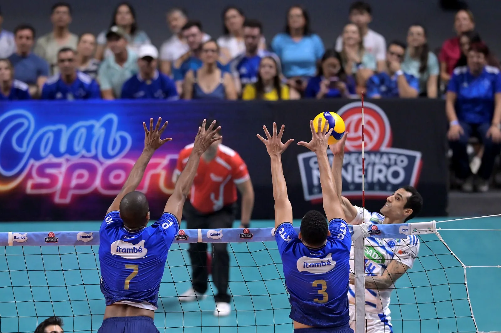
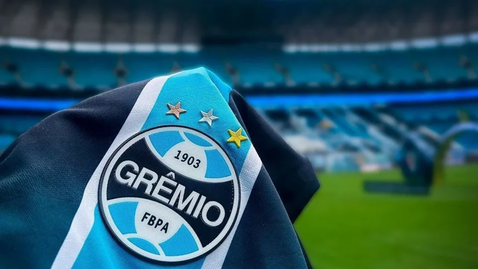
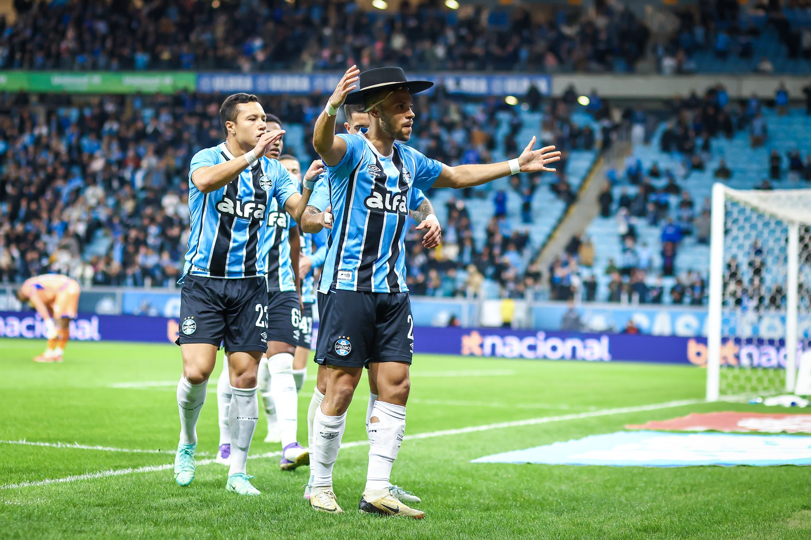

Meu primeiro post
Por: Bruno
Boas-vindas ao meu novo blog! Aqui vou compartilhar dicas de programação e coisas que eu gosto de fazer na minha vida.

Vou compartilhar conhecimentos sobre tecnologia e programação
Por: Bruno
Boas-vindas ao meu novo blog! Aqui vou compartilhar dicas de programação e coisas que eu gosto de fazer na minha vida.


Por: Bruno
Meu nome é Bruno, eu sou goleiro de futsal e jogo pro time, unidos da bola de Turvo PR, nós jogamos os campeonatos estaduais e municipais, com muitos titulos.


Por: Bruno
Eu gosto muito de praticar esportes, e o meu segundo esporte favorito é, o vôlei.


Por: Bruno
Desde criânça eu aprendi torcer para o grêmio pois minha familha inteira é do sul, e com isso o grẽmio passou a ser o meu time do coração..
